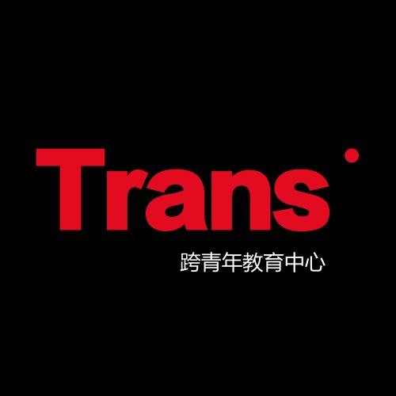

“学习”做一个跨性别
酷儿论坛
1周前
文章转载自公众号

跨青年
，
作者 TSECC
酷儿论坛

motss2002
杭州酷儿论坛（motss.info）致力于为杭州及周边地区学生性少数人群提供一个多元、健康、平等的环境，促进自我认同和社会认可。
TRANS YOUTH
在家里打扮成一个“女性”的模样，和以这样的姿态走出家门，完全是两种截然不同的体验。
打扮的过程本身是充满乐趣的：先用粉底轻轻地均匀抹到脸上，以此“删除”那些多余的、累赘的东西，比如下巴上淡淡的胡子痕迹，以及额头上残留的青春痘印，让我的身体成为一具赤条条的、毫无分化的扁平的泥胚；再用腮红、眼影和口红“增添”一些美好的、诱人的东西，唤醒那种属于“女性气质”的“鲜活生机”，重塑自己的性别。一切像是人的第二次出生，只不过这一次不同于上一次，在重生的过程中，我成了我自己的造物主。借助一系列工具，操弄着社会对性别的刻板认知，我感觉自己仿佛是一个天才炼金术师——我的身体就是最引以为豪的产品。
但是，当繁琐的打扮工序宣告结束，我却只敢在镜中看着这个我亲手打造出来的身体，我惧怕以这样的模样出门。我到底在恐惧什么？在我心中，门外面是一个什么样的世界？我的性别表演似乎只有排练，却永远无法登台。
作者本人
无法被展出的表演
作为一个居住在集体宿舍里的大学生，对于他人排斥把一具“男性身体”打扮成为“女性身体”这一工程的感知，我是从自己的室友开始的。
从小到大，我都被社会大多数认同为男性，也一直遵循着这样的规训成长至今。因此，想要大大方方、无拘无束地在室友面前打扮，对于我来讲是一个禁忌，宛如一场盛大的“出柜”。为了避免这种尴尬的情况，每次我都会精心挑选一个室友都去上课的时间，再打开化妆品盒，开始涂涂抹抹，享受这种独一无二的快乐。
大多数时间，我都是在这样的环境下悄悄化妆
但是，这样的努力并不一定会奏效。我还清晰地记得那天，当我正愉快地在脸上打腮红时，门口突然传来了钥匙窸窸窣窣的声音。一种巨大的恐惧和尴尬感突然向我袭来，我的第一反应是迅速夺过旁边的枕头并把自己的脸死死地埋在里面——当我做完了这个动作时，我才意识到自己的应对策略与鸵鸟遇到危险埋头钻进土堆里一样，只会慌慌张张地逃避，而不是主动地面对意料之外的状况。
现在再想起这件事，其实比起被室友看到化妆的我，更加令我不开心的，反而是自己对于“化妆被人看见”的过分担忧和警惕——这似乎像是一个警钟，难道我以后都必须在这种东躲西藏里度过自己的一生吗？这种深深的羞耻感到底从何而来，我当然没有做错什么，但正是这种“仔细想了想自己并没有错”的体验，才让那种在事发当场下意识般的羞耻感显得更加无奈，更加带着一种悲哀的宿命色彩。
越是强烈地意识到这种来自社会的系统性压抑，我就越想要反抗。化妆和打扮，就成为我在这个窒息的环境中舒缓的零星机会。毕竟，化妆是可以通过磨练而不断提高水平的，寻找自己喜爱的模样并通过不停的试错和练习，最终成功打造出心目中自己的模样，这种感觉实在是太美妙了；而且化妆把那些曾经让我困惑不已的问题，重新解构和定义，直接在我的面前呈现出答案——其实“天生的”、“自然的”的性别气质只是一种刻板印象，因为性别是完全可以一步步“学习”的，并不讲究天资，只需要熟能生巧，便可以活成自己希望的样子。
不过，我心里很清楚地给这个“反抗”划定了一个界限——我不能以这个姿态出门。所以，当我的打扮工作终于宣告结束，一切就已经落幕了，至于靓丽的那一面，是无法轻易在别人面前展现出来的。
即使，在每次化妆的过程中，我都非常渴望自己是影视作品中的主角，可以像TA们那样，为了赴一个重要的约会，然后在家中打扮个三四个小时，在一切结束后能够兴高采烈地冲出家门，可我却不能——因为妆容、服装的修饰，只是TA们在别人面前展现出良好形象的工具，只是见面的前奏和准备工序；但对我来说，打扮的唯一目的只是“让自己开心”，让自己在看似已经实现的性别认同之前感到满足——当然，在这里“唯一”的背后，恐怕有一些无奈，尤其当打扮完成之后，那种笼罩在我身上的巨大虚脱感——不仅因为原本化妆的繁琐步骤令我疲惫，还有当我想象以这副模样走出家门后，可能会招致一系列来自别人的目光和评论，以及随之而来的恐慌。
出门意味着什么呢？首先，与路人目光交汇，就像是一场你明明已经复习了好久好久、但却还是一点都没有自信的考试。你希望路人的目光能停留在你身上，但又不希望停留太久——毕竟长久来自路人的凝视，就意味着可能你的性别扮演已经漏出了马脚，但路人如果完全不看，那么没有观众的性别表演又有什么意思呢？
目光交汇只是第一关，为了开展社交活动，你还需要开口说话。你清楚地明白，一旦自己开口说话，你的嗓音立刻会向全天下宣布——这个人并非是一个“天然的”女性。从小到大，你的声音似乎是你遭受歧视的直接原因。这是一种什么样的声音呢？既非传统男性意义上的“粗犷”，也非传统女性意义上的“细腻”，而是在二元性别间游移的、带着尖锐和沙哑的嗓音，通常这种声音与一具生理男性的肉身捆绑在一起时会被这样一个足以轻易地摧毁你的尊严的词进行概括——“娘娘腔”。但要知道，“娘娘腔”并非是女性的声音与男性的身体叠加，娘娘腔所指代的声音，是一种无法简单地落在二元性别框架里的声线。就像它所招致的来自一个男性社群的排斥一样，它也同样招致来自女性社群的驱逐——人们向来对无法归类的东西抱有恐惧。
为了跨越声音的屏障，很多跨性别者会选择学习“伪声”，以此打造一个在日常社交场景的互动中不会招致任何怀疑的“女性”身体。过了这两关以后，剩下的内容似乎就显得容易一些，毕竟社会中大多数性别隔离的制度设施，都仅仅着眼于表面的“性别气质”这一项内容。当然，这些也只是跨性别生活中的小小一部分而已。
打扮的快乐与焦虑
打扮对我的赋权作用无疑是巨大的。作为一个从小对漂亮衣服和美丽脸蛋常常目不转睛的生理男孩，我总是会对“女性气质”的美，有着强烈的渴望。但通过打扮，我逐渐发现，原来“女性美”并非是崇高或者神圣的东西，而是可以分解成一个个步骤、提炼出一个个原理的可拆卸、可复制、可轻易获取的美。
当然，学习的过程往往伴随着一系列失败，比如TA人的嘲笑和持久地注视。然后周而复始，这种失败带来的惨痛经验，也会慢慢转变为不断磨炼打扮技术的最好推动力。诚然，这个过程是伴随着苦与乐的，不过随着我越来越能将自己的经验放置在结构性框架下去思考时，我就越来越想要质疑——
为什么我要拼尽全力融进那个与男性相对应的“女性”范畴呢？尤其是因“女性”的身份认同而产生的焦虑，与若干次似乎已经“成为她”带来的喜悦，都在不断地强化一种意识——性别只给了我两个选项，一旦我没能成功地从男性转换为女性，而是落在了中间的地带，我就会遭到毫不留情的惩罚。但难道在二元性别中间，就没有一片无法被轻易归类的灰色地带吗？我正处于灰色地带之中，这一事实本身为什么不值得认同并为之骄傲，而是要将自己收归进二元性别的身份范畴中之后，才终于能长吁一口气，感到如释重负呢？
虽然我一直喜欢自我标榜为一个激进的建构论者（constructivist）[1]，认为性别身份很大程度上是一种文化建构而非是本质的属性，我也近乎痴迷地热爱酷儿理论，并认为这应该成为一种实践的哲学。只不过，当这一系列性别经验压在了我自己的身上，“消解性别”（undoinggender）[2]成了一种奢侈的尝试，二元性别制度活生生地压在我的身上，攫取了我的感知，左右我的情绪。
当我穿裙出门时，我一方面希望自己能被认为是彻彻底底的女性，因而能够省去让路人感到疑惑的过程，比如不再需要应对路人眼里的困惑等状况；一方面又希望自己能通过呈现甚至放大这种性别上的“不和谐”，来认肯自己的价值——性别模糊并不是我的错，而是这个无所不包的二元性别制度的错。作为一个性别越轨者（genderoutlaw）[3]，我发现自己越来越容易生气。我想要直接对抗二元性别制度，我想要在这种冲突中锚定自己的结构性位置——有一段时间，我用一整套“女性化”的装束来装扮自己，唯独不刮胡子，我希望路人能够在与我的“短兵相接”中“不得不”面对来自一位性别越轨者的抗争和敌意。
但是，当这场战役结束，我也不明白自己到底是“输了”还是“赢了”，并没有预料中的“凯旋”之感，反而因为刚才这一正面冲突，而直接堕入更深的疲惫和随之而来困惑之中——我到底该如何协调自己的性别认同与社会的性别文化之间的关系？一种拒绝接受性别规训并保持自身“酷儿美学[4]”的反同化（anti-assimilationist）[5]的性政治真的是可能且可欲的吗？我喜爱以富于女性气质的模样在男厕撩起裙子如厕，并得意地欣赏着那些神态各异的男性，以这样的方式让这群顺性别男也体验被二元性别厕所制度排斥的无所适从的滋味。但当我这样以激进的性别游击队[6]来自我标榜时，对于TA们而言，我是不是更像一个性别恐怖主义者呢？
我并非要否定寻求性别身份的彻底转变的实践和经验，只是目前大众对跨性别的认知，也有很多来自于跨性别社群的自我风格化，这进而影响着跨性别对自我的观看和认知。我觉得酷儿对社群内部也同样提出了一个值得思考的问题——如果在跨性别社群内部，只有跨越到性别两极的实践得到关注和赞赏，那么游移在中间地带的跨儿是不是也无法在其中找到自己的位置呢？
波伏瓦曾在《第二性》第二卷开头写：女人不是天生的，而是塑造成的，指出了性别的社会建构性；基于此，我也可以对跨性别做出类似的判断——跨性别不是天生的，而是塑造成的。当然，这个“塑造”并不意味着跨性别的身体是社会文化任意摆布下的玩偶，相反，跨性别的身体和跨性别的身份认同是在我自己夜以继日地零敲碎打之下诞生的，正如弗兰肯斯坦打造出的那个“怪胎”[7]一样，我从我的身体中感受驱逐、感知污名，我的身体经验里流淌着游移、彷徨、挣扎，我也一次又一次将力量重新赋予我的身体——怪胎在最开始大概都难免在心目中构建一个“正常”躯体的憧憬，但当“正常”被证明不过只是一个幻想，一切得以改变，我也开始了重生——羞耻被转化为骄傲，沉默再也盖不住尖叫，身体无法被彻底驯化，我对多元世界保持着敞开的姿态，并为自己是怪胎（酷儿）这件事而感到自豪。
注释：
[1]建构论者（constructivist）：指持有这一观点的人——社会事实是由人类的一系列活动创造出来并赋予其意义的。
[2]消解性别（undoing gender）：源于Judith Butler在2004年出版的Undoing Gender一书标题，中文由李钧鹏译为“消解性别”。
[3]性别越轨者（gender deviant）：20世纪早期的社会学家将同性恋、跨性别视为“正常”的性别体制下的异常、偏离与越轨，我这里是想通过拥抱越轨者的身份来保持对主流文化的警惕与省思。
[4]酷儿美学（queer aesthetics）：我认为酷儿美学是一种刻意模糊二元性别边界的审美创造活动，其美感生成来自于对传统性别气质的反抗、拼贴、戏仿和嘲讽。
[5]反同化（anti-assimilation）：拒绝通过强调自身与主流人群的相似性来实现社会融入的策略。
[6]性别游击队（gender guerrilla）：我将游击战争作为持性别异见者（gender dissident）反抗主流性别体制的隐喻，强调在日常生活中时时刻刻反思性别的规范性并做出行动，在性别体制的边缘不断狙击所谓正统性身份的自我标榜。
[7]弗兰肯斯坦：弗兰肯斯坦是玛丽·雪莱的小说《弗兰肯斯坦》的主人公，他通过科学实验创造了一个生命，但这个生命因长相丑陋不为社会所容，遭到人类驱逐。我在这里把弗兰肯斯坦作为跨性别的隐喻，灵感来自于Susan Stryker于1994年发表在期刊Gay and Lesbian Quarterly上的文章My words to VictorFrankenstein above the Village of Chamounix。
作者&图片✎丸子
编辑✎李钘滢
排版✎ 诗诗
未 经 允 许 请 勿 转 载 到 其 他 公 众 号
请 给 该 公 众 号 留 言 获 取 内 容 授 权
本 文 仅 代 表 作 者 个 人 关 点
不 代 表 本 公 众 号 立 场
About TSECC
TSECC｜关注跨性别教育与跨性别青年的经济性赋权
Contact us
kqnjyzx@gmail.com
合作/投稿请发送邮件
 扫一扫下载订阅号助手，用手机发文章
扫一扫下载订阅号助手，用手机发文章
长按二维码向我转账
“”

受苹果公司新规定影响，微信 iOS 版的赞赏功能被关闭，可通过二维码转账支持公众号。
阅读
朋友会在“发现-看一看”看到你“在看”的内容

已同步到看一看写下你的想法
最多200字，当前共字
已发送
朋友将在看一看看到
写下你的想法...
发布到看一看
发送中
微信扫一扫
关注该公众号
关注该公众号
使用小程序